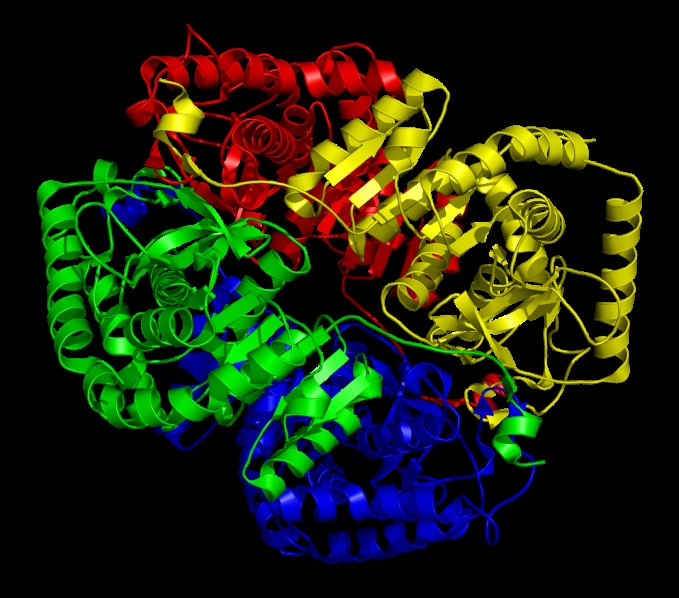

Функции:
ЛДГ производит обратимое окисление L-лактата в ПВК (пируват).
Локализация:
ЛДГ1 содержится в печени, а ЛДГ5 в мышцах и печени. Для определения патологии печени биохимическим методом анализа крови в приоритете его содержание в крови.
У лактата есть пять изоферментов: ЛДГ1 и ЛДГ2 являются ферментами, содержащимися в миокарде, а ЛДГ3, ЛДГ4 и ЛДГ5 – в скелетных мышцах и печени. Активность ЛДГ в норме составляет 250 МЕ/л. Следует учитывать, что ЛДГ в крови может повышаться при беременности, физических нагрузках и у младенцев и маленьких детей. С возрастом активность в крови ЛДГ уменьшается. Для диагностики заболеваний важное значение имеет содержание конкретного изофермента. Повышение ЛДГ4 и ЛДГ5 свидетельствует о развитии синдрома цитолиза.